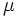
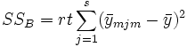

ist der Fehlerterm. Anschließend wird die Stichprobenvariation in drei Teile geteilt, so dass wir drei Hypothesentests durchführen können:
ist der Fehlerterm. Anschließend wird die Stichprobenvariation in drei Teile geteilt, so dass wir drei Hypothesentests durchführen können:
Inhalt |
Es sei die k-te Beobachtung auf Stufe I des Faktors A und Stufe j des Faktors B. Dann kann das Modell der zweifachen ANOVA wie folgt geschrieben werden:
wobei  der Mittelwert der gesamten Antwortdaten ist, ist die Abweichung bei Niveau l des Faktors A; ist die Abweichung bei Niveau j des Faktors B, ist der Wechselwirkungsterm zwischen zwei Faktoren und ist der Fehlerterm. Anschließend wird die Stichprobenvariation in drei Teile geteilt, so dass wir drei Hypothesentests durchführen können:
Für Faktor A ist die Nullhypothese, dass die Mittelwerte der r verschiedenen Populationen gleich sind. Die Alternativhypothese lautet, dass sich mindestens ein Mittelwert einer Population von den anderen Mittelwerten unterscheidet:
, fü einige p und q, 1 ? p, q ? r,
Für Faktor B ist die Nullhypothese, dass die Mittelwerte der s verschiedenen Populationen gleich sind. Die Alternativhypothese lautet, dass sich mindestens ein Mittelwert einer Population von den anderen Mittelwerten unterscheidet:
;
 , fü einige p und q, 1 ? p, q ? s;
, fü einige p und q, 1 ? p, q ? s;
Für den Wechselwirkungsterm lautet die Nullhypothese, dass keine Wechselwirkung zwischen den beiden Faktoren besteht:
;
, fü einige p und q, 1 ? p, q ? rs;
Um diese Hypothesen zu testen, teilt man anschließend die Varianz der gesamten Stichprobe in vier Teile und schätzt sie durch die Stichprobenvariation:
wobei

und wir haben
SSTotal ist die Gesamtsumme der Quadrate, SSA stellt die Variation der durchschnittlichen Differenzen des Faktors A dar, SSB stellt die Variation der durchschnittlichen Differenzen des Faktors B dar, SSAB stellt die Variation der Wechselwirkung und SSError die Variation aller individuellen Stichproben dar. Anschließend kann der F-Test verwendet werden, um die Signifikanz der Varianz zwischen ihnen zu testen:
Bei einem gegebenen Signifikanzniveau können wir die Nullhypothese verwerfen, falls die F-Statistik den kritischen Wert F übersteigt. Das Gleiche gilt, falls der zugehörige p-Wert der F-Statistik kleiner ist als das Signifikanzniveau . H0 wird verworfen.
Die Berechnung der zweifachen ANOVA-Tabelle wird folgendermaßen zusammengefasst:
| Quelle der Variation | Freiheitsgrade (DF) | Summe der Quadrate (SS) | Mittel der Quadrate (MS) | F -Wert | Wahrsch. > F |
|---|---|---|---|---|---|
| Faktor A | r - 1 | SSA | MSA | MSA / MSError | |
| Faktor B | s - 1 | SSB | MSB | MSB / MSError | |
| Wechselwirkung | (r- 1) (s - 1) | SSAB | MSAB | MSAB / MSError | |
| Fehler | rs (t - 1) | SSAB | MSError | ||
| Gesamtsumme | rst - 1 | SSTotal |
Die zweifache ANOVA in Origin benutzt einige der NAG-Funktionen. Die NAG-Funktion nag_dummy_vars (g04eac) wird verwendet, um die nötigen Designmatrizen zu erzeugen, und die NAG-Funktion nag_regsn_mult_linear (g02dac) berechnet die linearen Regressionen der Designmatrizen. Diese Ergebnisse der linearen Regression werden dann verwendet, um die ANOVA-Tabelle zu bilden. Beachten Sie bitte die NAG-Dokumentation für weitere Hintergrundinformationen.
Wenn ein Experiment der zweifachen ANOVA festgestellt hat, dass mindestens ein Faktorstufenmittelwert statistisch von den Mittelwerten der übrigen Faktorstufen abweicht, dann vergleicht ein Mittelwertevergleich nachfolgend alle möglichen Paare von Faktorstufenmittelwerten dieses Faktors, um festzustellen, welche(r) Mittelwert (oder Mittelwerte) signifikant abweicht (abweichen). Es gibt verschiedene Methoden des Mittelwertevergleichs in Origin. Wir verwenden die NAG-Funktion nag_anova_confid_interval (g04dbc), um Mittelwertevergleiche durchzuführen.
Zwei Typen des mehrfachen Mittelwertevergleichs:
Einzelschrittmethode Sie erstellt simultane Konfidenzintervalle, um zu zeigen, wie sich die Mittelwerte unterscheiden. Dazu gehören die Methoden nach Tukey-Kramer, Bonferroni, Dunn-Sidak, Fishers LSD, Scheffé und Dunnett.
Schrittweise Methode Führt nacheinander die Hypothesentests aus. Dazu gehören der Holm-Bonferroni- und der Holm-Sidak-Test.
Die Analyse der Trennschärfe berechnet die Ist-Trennschärfe für die Stichprobendaten als auch die hypothetische Trennschärfe, falls zusätzliche Stichprobenumfänge angegeben sind.
Die Trennschärfe einer zweifachen Varianzanalyse ist ein Maß für deren Empfindlichkeit. Die Trennschärfe ist die Wahrscheinlichkeit, dass die ANOVA Unterschiede in den Mittelwerten der Grundgesamtheiten aufdeckt, wenn tatsächliche Unterschiede existieren. Drückt man dies mit den Begriffen der Null- und Alternativhypothese aus, so ist die Trennschärfe die Wahrscheinlichkeit dafür, dass die Teststatistik F stark genug ist, um die Nullhypothese zu verwerfen, wenn sie tatsächlich verworfen werden sollte (d.h. die Nullhypothese ist nicht wahr).
Das Dialogfeld Zweifache ANOVA in Origin kann Trennschärfen für Faktor A und Faktor B berechnen. Wenn das Kontrollkästchen Wechselwirkungen aktiviert wurde, kann Origin auch die Trennschärfe für die Wechselwirkung A*B berechnen.
Die Trennschärfe wird durch folgende Gleichung definiert:
wobei f die Abweichung von der nicht zentrierten F-Verteilung mit df und dfe Freiheitsgraden und nc = SS/MSE ist. SS ist die Summe der Quadrate der Quelle A, B oder A*B, MSE ist das Mittel der Quadrate des Fehlers, df ist der Freiheitsgrad des Zählers für die Quelle A, B oder A*B, dfe ist der Freiheitsgrad der Fehler. Alle Werte (SS, MSE, df und dfe) werden der ANOVA-Tabelle entnommen. Der Wert von probf() wird durch die NAG-Funktion nag_prob_non_central_f_dist (g01gdc) ermittelt. Beachten Sie bitte die NAG-Dokumentation für weitere Hintergrundinformationen.
Die obige Beschreibung ist eine kurze Übersicht über den Algorithmus der einfachen ANOVA. Weitere Informationen über die Einzelheiten der mathematischen Deduktion finden Sie im entsprechenden Teil des Anwenderhandbuchs und der NAG-Dokumentation.